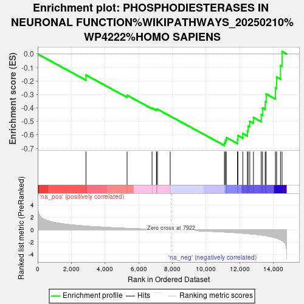

| | | Dataset | ag_ranks |
| Phenotype | NoPhenotypeAvailable |
| Upregulated in class | na_neg |
| GeneSet | PHOSPHODIESTERASES IN NEURONAL FUNCTION%WIKIPATHWAYS_20250210%WP4222%HOMO SAPIENS |
| Enrichment Score (ES) | -0.67831916 |
| Normalized Enrichment Score (NES) | -2.055323 |
| Nominal p-value | 0.0 |
| FDR q-value | 0.04947321 |
| FWER p-Value | 0.124 |
Table: GSEA Results Summary

Fig 1: Enrichment plot: PHOSPHODIESTERASES IN NEURONAL FUNCTION%WIKIPATHWAYS_20250210%WP4222%HOMO SAPIENS
Profile of the Running ES Score & Positions of GeneSet Members on the Rank Ordered List
| SYMBOL | RANK IN GENE LIST | RANK METRIC SCORE | RUNNING ES | CORE ENRICHMENT | | 1 | PDE4D | 2869 | 0.605 | -0.1558 | No |
| 2 | PDE6D | 5312 | 0.241 | -0.3058 | No |
| 3 | PDE9A | 6797 | 0.090 | -0.4005 | No |
| 4 | PDE10A | 7060 | 0.069 | -0.4139 | No |
| 5 | PDE4B | 7062 | 0.068 | -0.4096 | No |
| 6 | PDE7A | 7118 | 0.064 | -0.4093 | No |
| 7 | GRIN1 | 7877 | 0.004 | -0.4604 | No |
| 8 | PDE6C | 11098 | -0.341 | -0.6567 | Yes |
| 9 | CAMK2A | 11154 | -0.350 | -0.6382 | Yes |
| 10 | PDE1C | 11211 | -0.359 | -0.6191 | Yes |
| 11 | GUCY1A2 | 11876 | -0.478 | -0.6337 | Yes |
| 12 | PDE7B | 11899 | -0.483 | -0.6046 | Yes |
| 13 | PDE3B | 12190 | -0.545 | -0.5896 | Yes |
| 14 | PDE3A | 12465 | -0.607 | -0.5697 | Yes |
| 15 | PDE4A | 12506 | -0.614 | -0.5334 | Yes |
| 16 | PDE8A | 12605 | -0.635 | -0.4998 | Yes |
| 17 | PDE12 | 12823 | -0.689 | -0.4708 | Yes |
| 18 | CREB1 | 13286 | -0.827 | -0.4496 | Yes |
| 19 | PDE2A | 13362 | -0.857 | -0.4003 | Yes |
| 20 | PRKG1 | 13522 | -0.916 | -0.3529 | Yes |
| 21 | PDE5A | 13579 | -0.948 | -0.2965 | Yes |
| 22 | PDE1A | 14131 | -1.290 | -0.2520 | Yes |
| 23 | PDE11A | 14201 | -1.354 | -0.1708 | Yes |
| 24 | PPP1R1B | 14431 | -1.598 | -0.0849 | Yes |
| 25 | GRIN2B | 14523 | -1.730 | 0.0187 | Yes |
Table: GSEA details [plain text format]
Fig 2: PHOSPHODIESTERASES IN NEURONAL FUNCTION%WIKIPATHWAYS_20250210%WP4222%HOMO SAPIENS: Random ES distribution
Gene set null distribution of ES for PHOSPHODIESTERASES IN NEURONAL FUNCTION%WIKIPATHWAYS_20250210%WP4222%HOMO SAPIENS